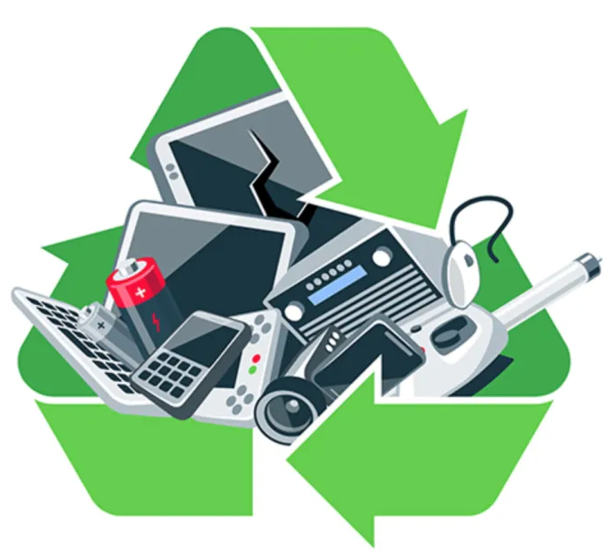
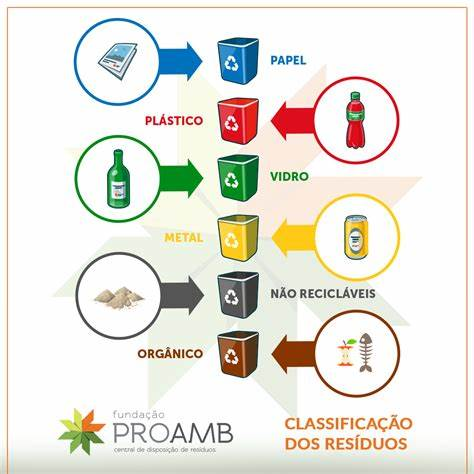

LIXO ELETRÔNICO
 Os equipamentos elétricos e eletrônicos possuem diversos componentes tóxicos em suas estruturas. Se descartados de maneira incorreta, esses resíduos tóxicos podem contaminar o solo e os lençóis freáticos, colocando em risco a saúde pública. Segundo o Centro de Tecnologia Mineral (CETEM), cerca de 70% dos metais pesados encontrados em lixões e aterros sanitários controlados são provenientes de equipamentos eletrônicos descartados incorretamente. Um estudo do Centro de Ecologia Ann Arbor pesquisou 36 celulares de diferentes marcas e modelos. Foi analisada a quantidade de componentes tóxicos presente nos aparelhos eletrônicos, como chumbo, bromo e cádmio. São elementos que desde sua extração até o fim da vida útil do produto causam danos ao meio ambiente e à saúde humana.
COMO REDUZIR O LIXO ELETRÔNICO?
"Os resíduos eletrônicos são do tipo que mais rápido crescem no mundo", garante Peter Bakker, Presidente do Conselho Mundial de Negócios para o Desenvolvimento Sustentável (WBCSD).
Diante desse contexto, devemos tomar medidas urgentes. A seguir, revisamos algumas delas:
O consumo de aparelhos cresce e são trocados com mais rapidez. Mudar esta tendência depende tanto do usuário, que deve ser menos permeável às estratégias de marketing que incentivam o consumo, como dos fabricantes, que cada vez mais optam por tendências como o design ecológico.
Os especialistas em reciclagem eletrônica recomendam que amigos ou familiares herdem os aparelhos que ainda funcionam ou que sejam vendidos em mercados de segunda mão. Também existe a possibilidade de doar o produto a uma ONG especializada.
Quando o produto já não funcionar e não houver possibilidade de ser utilizado por alguém próximo, a opção deve ser a reciclagem. Uma opção para o consumidor é entregar o aparelho antigo no estabelecimento onde for comprar o novo ou em alguma empresa que se dedique à recuperação de equipamentos eletrônicos.
